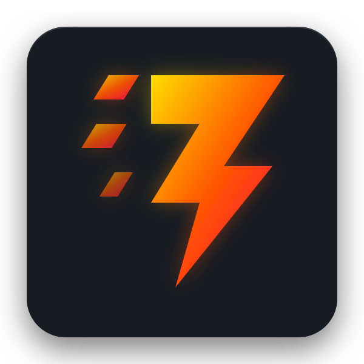

Jolt
A Clojure interpreter running on Janet.
Pure Janet — zero JVM, zero native deps.

A Clojure interpreter running on Janet.
Pure Janet — zero JVM, zero native deps.
A minimal bootstrap that loads battle tested Small Clojure Interpreter as its standard library.
No JVM. Janet's ~1 MB binary hosts the full Clojure runtime. Embed anywhere.
future runs on OS threads via Janet's ev/thread — multi-core CPU-bound work out of the box.
Go blocks, channels, transducers, and alts! — backed by Janet's stackful fibers, no CPS rewrite.
Immutable vectors (32-way tries), maps, and sets — Clojure-compatible value semantics.
Call Janet functions, access Janet's standard library, and shell out — all through CLJS-style . syntax.
# clone and build
git clone https://github.com/yogthos/jolt.git
cd jolt
git submodule update --init # pulls vendor/sci
jpm build # compiles build/jolt
# requires jpm and Janet ≥ 1.41build/jolt
;; user=> (defn fib [n] (if (< n 2) n (+ (fib (- n 1)) (fib (- n 2)))))
;; #'user/fib
;; user=> (map fib (range 10))
;; (0 1 1 2 3 5 8 13 21 34)build/jolt file.clj [args] # run a file
build/jolt -e EXPR [args] # evaluate and print
build/jolt -h # help;; from Janet
(use jolt/api)
(def ctx (init))
(eval-string ctx "(+ 1 2)") ; → 3
(eval-string ctx "(map inc [1 2 3])") ; → [2 3 4](def ctx (init {:compile? true}))
(eval-string ctx "(defn fib [n] (if (< n 2) n (+ (fib (- n 1)) (fib (- n 2)))))")
(eval-string ctx "(fib 30)") ; → 832040, ~600× faster than interpretedJolt targets Clojure semantics on Janet — not the JVM. Notable divergences:
| Aspect | Jolt |
|---|---|
| Host | Janet, not JVM — no Java interop |
| Numbers | Janet ints & doubles; no ratios or BigDecimal |
| Collections | Immutable persistent structures (32-way tries) |
| Concurrency | No STM; atoms & futures on real OS threads |
| core.async | Stackful fibers — <! works anywhere |
| Regex | Compiled to Janet's PEG engine |
| Mutable mode | Optional: JOLT_MUTABLE=1 jpm build |